Stříbrná expedice DofE
Ostrá expedice
Trasa: Pustevny - Radhošť - Rožnov pod Radhoštěm
Čas: Léto 2020
Délka trasy: 24 km/3 dny
Tradičně zde vrznu pár fotek a omáčku kolem.
Něco málo o DofE: Cena vévody z Edinburghu (anglicky Duke of Edinburgh) je vlastně pro mě těžko definovatelná akce. Jedná se o fúzi sportovní, seberozvojové a dobrovolnické činnosti, která je na závěr zakončená expedicí, při níž se dbá na spolupráci ve skupině a rozdělení úloh. DofE lze absolvovat ve třech úrovních: bronzové, stříbrné a zlaté.
Autoři fotek: já, Niky Jankůjová, Lída Hrachovcová, Jakub Crhák
Den první
V době "mezikoronové" jsme se domluvili na ostrou stříbrnou expedici DofE. Začali jsme v Kunčicích pod Ondřejníkem a už od prvních minut, co jsme vystoupili z autobusu a dali mi mapu do ruky jsem poznal, že to bude opravdu dlouhá expedice.
 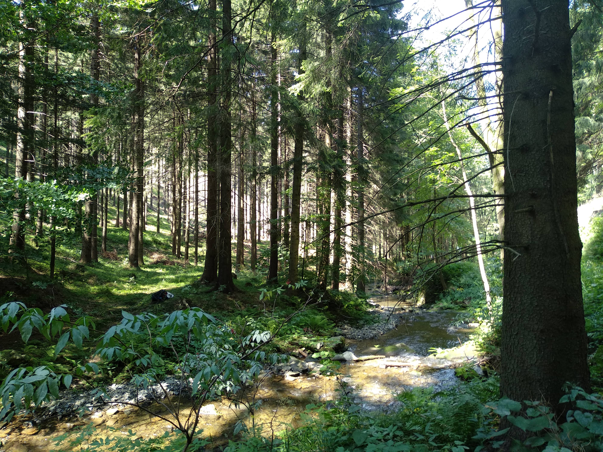
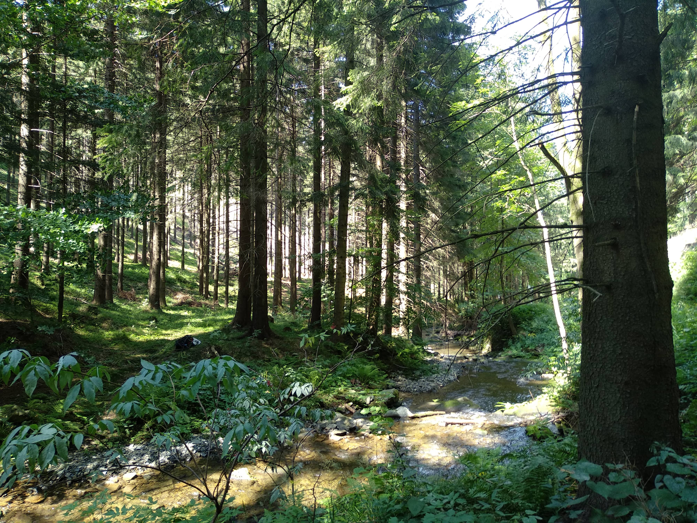

Zastavovali jsme opravdu co pět minut, co padesát metrů. Bylo horko a mi fakt potřebovali ty "selfíčka".


První den jsme šli takovou lesní cestičkou hore na pustevny. Potůček byl osvěžující a šel od něj příjemný chládek.


 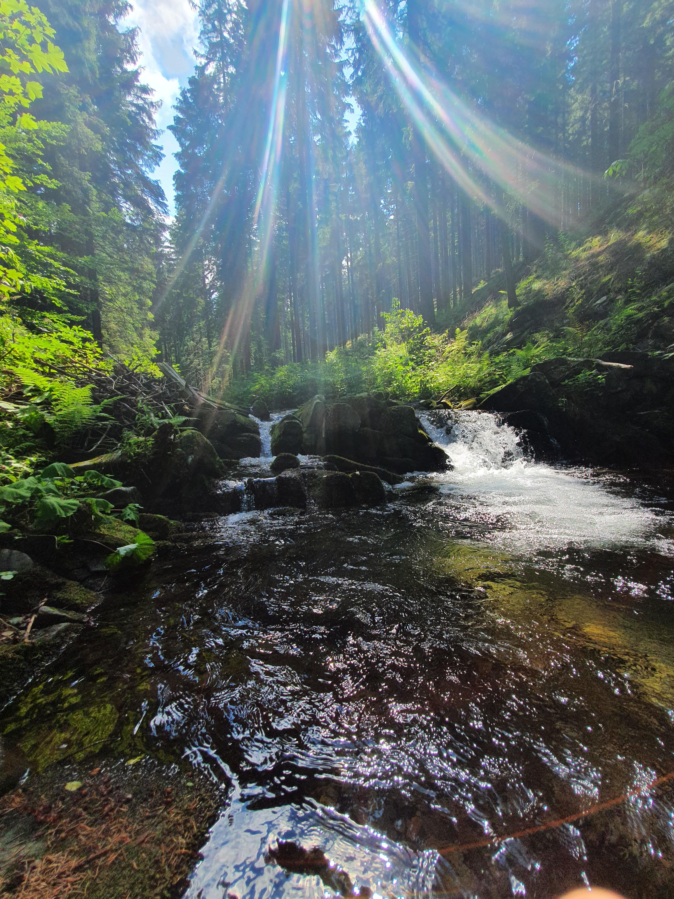
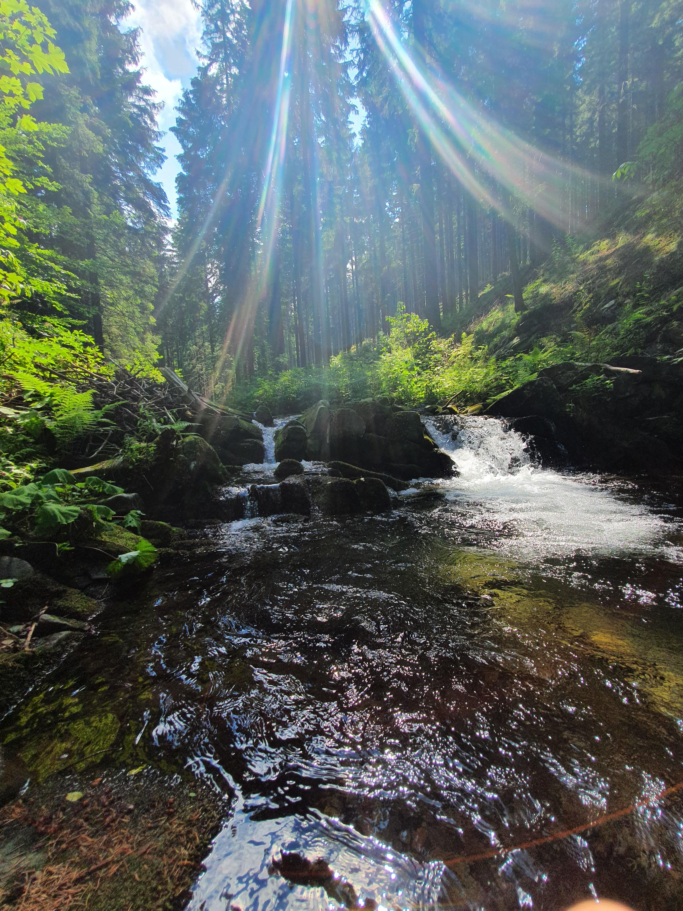


Když jsme došli na Pustevny, utábořili jsme se na louce. Soudě dle pohledů kolemjdoucích turistů, vypadalo to, že je nejspíš vstup na louku zakázán nebo asi nikdy neseděli na louce. Je pravda, že v tu dobu slunce pálilo do tváří, ale když jsem vytáhnul svou štangli salámu, život byl fajn.

V 8 hodin ráno jsme vyjížděli z nádraží v Olomouci a ve 4 jsme byli na Pustevnách jako na koni. Když jsme si prohlédli Pustevny a jejich okolí, byl čas se utábořit. Našli jsme si místečko, kde nejspíš stanování nebylo legální, ale my to neřešili. Koneckonců, Slunce zákona do těchto končin nesvítilo. Bylo tam ohniště, tak Kuba vytáhl kotlík a rozdělali jsme na hrachovku z pytlíku. Jako od maminky. Mrzí mě, že nemám fotky té hrachovky. Kolem deváté jsme šli na kutě a:
Tím končí den první.
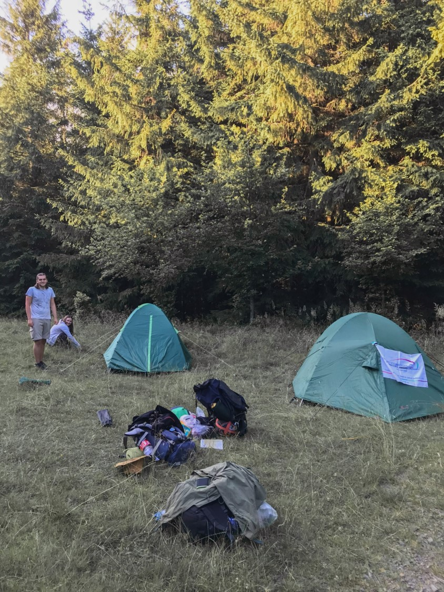Den druhý
Druhý den jsme šli omrknout Pustevny zblízka. V tu dobu byli zrovna nedávno otevřené po tom, co je požár srovnal se zemí. Vzpomínám si, že jsem se tam byl s tátou krátce předtím než shořeli.


Jurkovičovi Pustevny vypadají opravdu magicky a možná, že zevnitř vypadají o trochu magičtěji. To si jistě uvědomil jeden polský hipster děda, který se na všechno ptal, kolik to jako stojí a jak dlouho to trvalo vyrobit. Když mu ze zcela zřejmého důvodu odmítly sdělit cenu, sbalil svých pár švestek a myslel jsem si, že za neustálého častování se šel nadýchat čerstvého vzduchu. Když prohlídka skončila, zjistili jsme, že pán zakotvil u budky s pivem v ruce.


 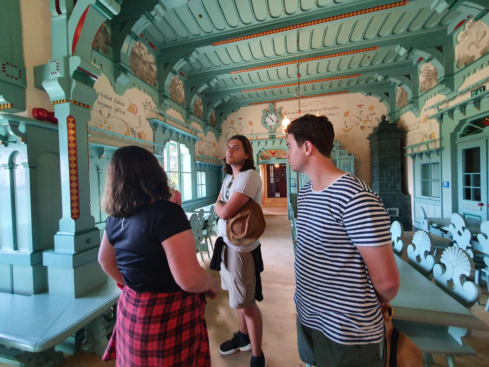
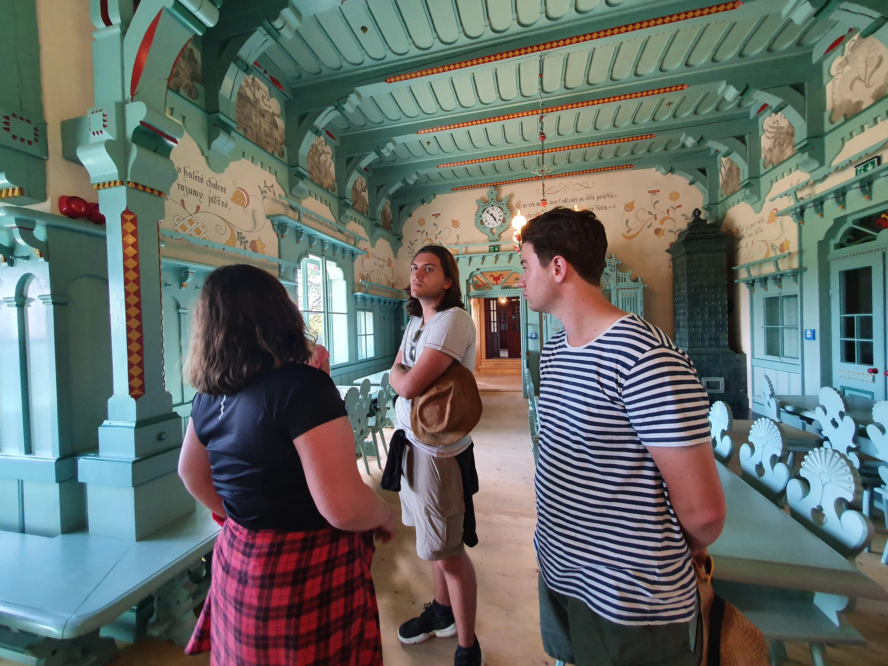

Okolo desáté jsme šli na stezku Valašku. Ta na mě moc nezapůsobila už jenom z důvodu vysoké ceny vlezného a možnost studentské slevy nebyla. Člověk se musel překotit přes "Nepálský" most, který byl jedinou možnou cestou jednosměrné stezky. Vrcholem stezky byl takzvaný chodník "Skywalk"


 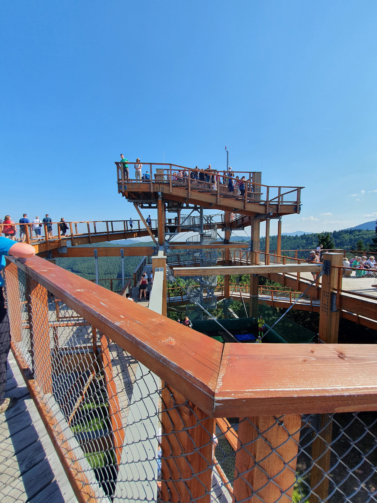
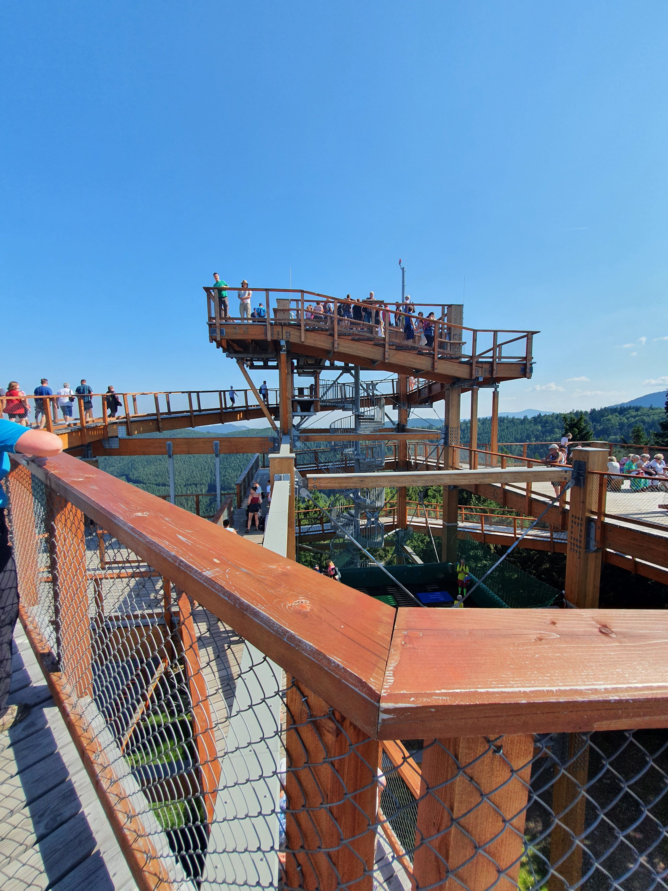
Klasicky jsme se najedli na našem paloučku. A vydali jsme se ve stopách Cyrila a Metoděje...
...Kolem Radegasta.
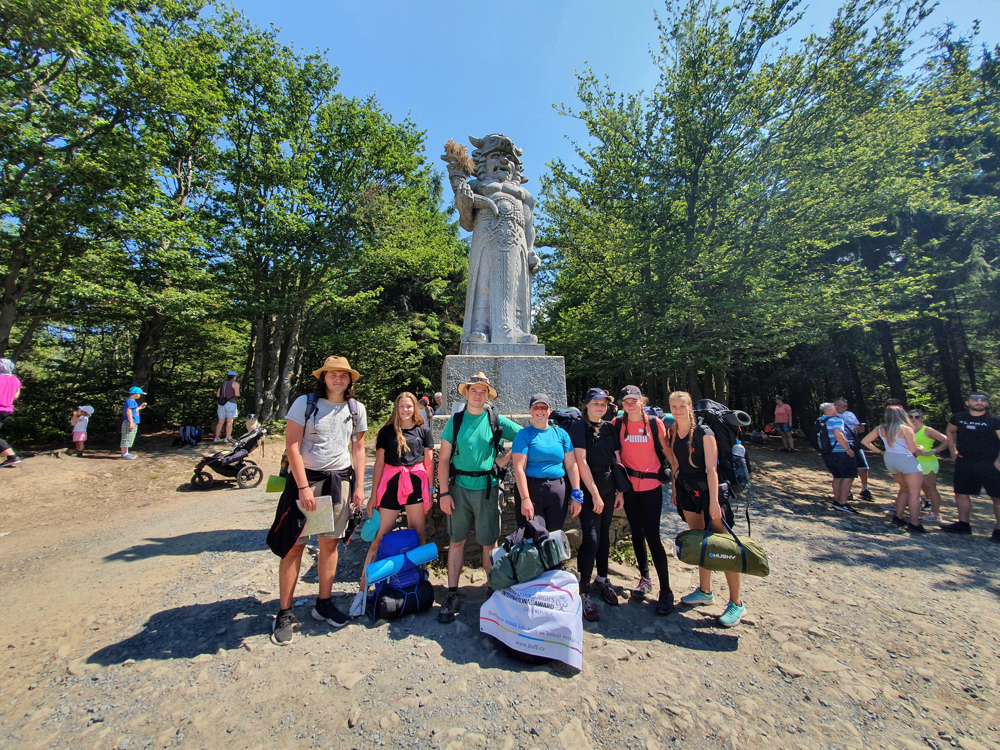 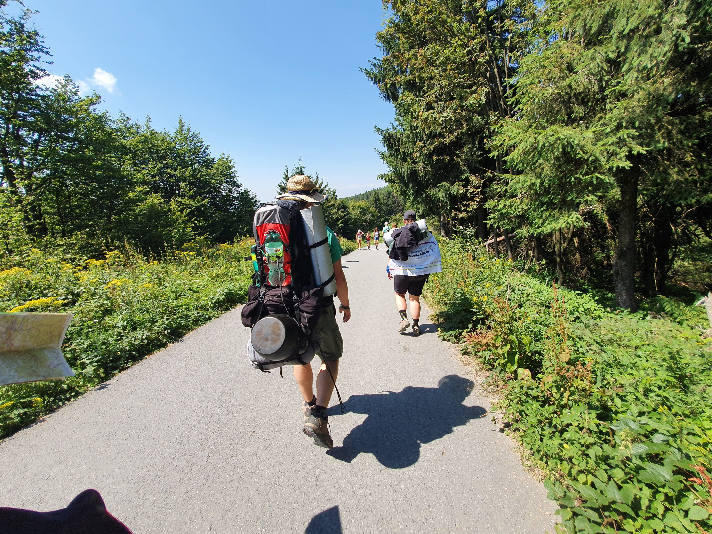V tu dobu nám volal Radan, náš odborný dozor z expedic. Spíše je to tak, že se objeví na takových našich předem určených "checkpointech". Bylo jedenáct hodin.
Do rendezvous s Radanem zbývali dva kilometry. Ty dva kilometry jsme ušli za dvě hodiny. Dodržovali jsme totiž náš přístup co 50 metrů to přestávka. Radan si myslel, že těch 24 kilometrů ujdeme za den a ne za tři dny. Tím se všechna ta pompóznost a vážnost expedice vytratila a já ji začal brát jako takový ten normální výletek, kdy si vyrazí mamka, taťka, strejček a děti na túru. Bylo stále vedro. Dorazili jsme do kempu zase kolem čtvrté odpoledne. Utábořili jsme se, doplnili vodu z "modré fontánky". Holky měli stan postavený. Kuba začal dělat večeři: rýžu a nějaký zeleninový mix spolu s plechovkou "Chalupářského mixu" od Hamé. Zkrátka idyla. Všichni připravovali večeři a já sám stavěl náš stan. Když jsme se seznámili rozvržením kempu, usadili jsme se na lavičku a mastili karty a bavili se do syta. O půl desáté se šlo na kutě a:
tím končí den třetí.
Den třetí
Třetí den všichni snídali Müsli. Jen já se svou čínskou polívkou jsem mezi nimi nepasoval.
Poslední den byl pohodový. Už nebylo takové vedro a my se vydali na Jurkovičovu rozhlednu. Tam jsme vyfotili všechna ta selfíčka a já nejspíš poprvé vyměnil tričko z Hello Summer na Baishi Kele.
Kolem oběda jsme to utli a prohlásili jsme expedici za splněnou. Kuba a já jsme šli do hospody na hambáč a holky šli do "Vegebaru".
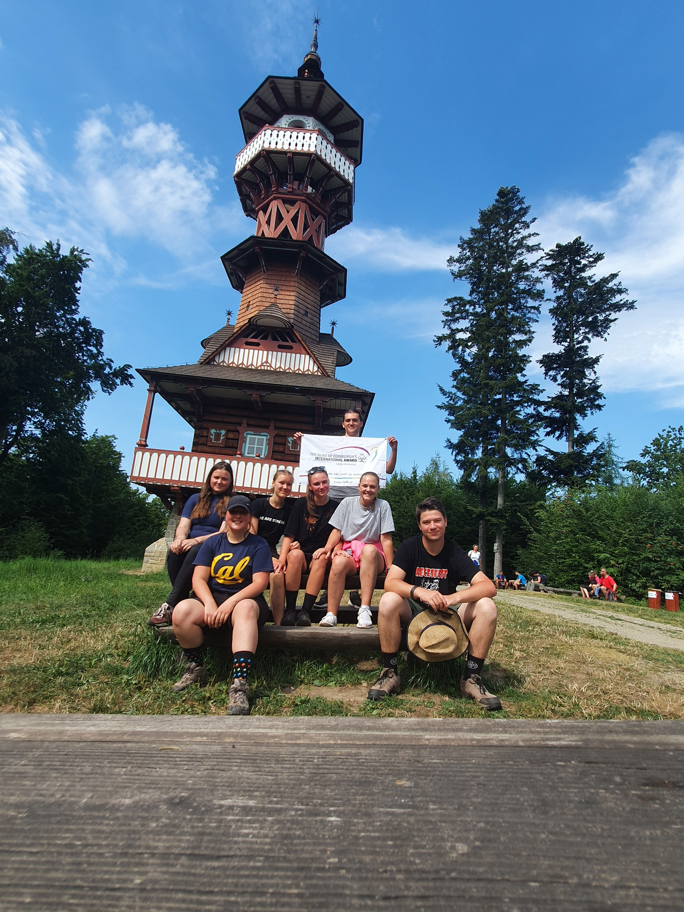Došli jsme na nádraží ve Frenštátě a jeli vlakem až do Holomóce. Když jsem pak dojel domů, vysvlékl jsem všechny trička a po zasloužené sprše jsem si lehl do postele a lenošil. Protože jak zpíval pan Suchý: "Je totiž neděle a mám dost času". Tím pádem:
tak skončil den třetí.
Když jsem se tak díval kolem sebe na svět s dětským, skoro až Buddshistickým pohledem, zjistil jsem, že to je prapodivné, že je v módě jet na výlet až k místu a tam se nacpat párkama a pivem. Doteď tomu moc nerozumím.